채널 · 1:1 대화 · 내 메모가 한 목록에 모이고, 읽지 않은 대화에는 남은 메시지 수가 표시됩니다. 얼굴을 보고 이야기할 일은 그 대화방에서 바로 화상회의로 엽니다.
전체 공지 · 부서 · 프로젝트마다 채널을 만들고 함께할 사람을 초대합니다. 지난 대화는 위로 올리며 이어 봅니다.
부서 · 직책이 함께 보이는 동료 목록에서 골라 바로 대화합니다. 접속 중인 동료는 표시됩니다.
나만 보는 보관함에 할 일과 파일을 남겨 두고, PC에서 적은 메모를 휴대폰에서 꺼내 봅니다.
채널이나 1:1 대화에서 [회의]를 누르면 멤버에게 알림이 가고 바로 모입니다. 한 번에 6명까지, 들어가기 전에 카메라 · 마이크를 확인합니다.
보고 있는 자료를 회의 화면에 크게 띄워 함께 봅니다. PC 앱에서는 전체 화면이나 프로그램 창 하나를 골라 공유합니다.
「작게 보기」로 회의를 화면 구석에 두고 대화와 파일을 계속 봅니다. 회의를 시작하고 끝낸 기록과 걸린 시간이 대화방에 남습니다.
보낸 메시지마다 아직 읽지 않은 사람 수가 「안 읽음 N」으로 보이고, 상대가 답을 쓰는 중이면 바로 압니다.
한글(hwp) · 오피스 · PDF · 이미지를 끌어다 놓거나, 이미지는 붙여 넣어 보냅니다(파일당 50MB). 사진은 대화 안에서 바로 보입니다.
대화 오른쪽에 채널 소개 · 멤버 · 최근 파일이 모여, 지난 파일을 대화를 거슬러 찾지 않아도 됩니다.
부서별 구성원을 보고 이름 · 부서 · 직급으로 찾아, 누르면 바로 1:1 대화가 열립니다.
새 메시지에 알림음이 울리고, 창을 내려 두면 바탕화면 알림이 뜹니다. PC 앱은 창을 닫아도 작업 표시줄 옆에서 받습니다.
가입 화면이 없고 관리자가 계정을 만듭니다. 퇴사자는 비활성화 한 번으로 더는 들어올 수 없습니다.
업무 대화를 회사가 관리하는 공간으로 옮깁니다.
아래 화면은 모두 서빔을 그대로 찍은 것입니다. 이름과 대화는 설명을 위한 가상 회사 자료입니다.
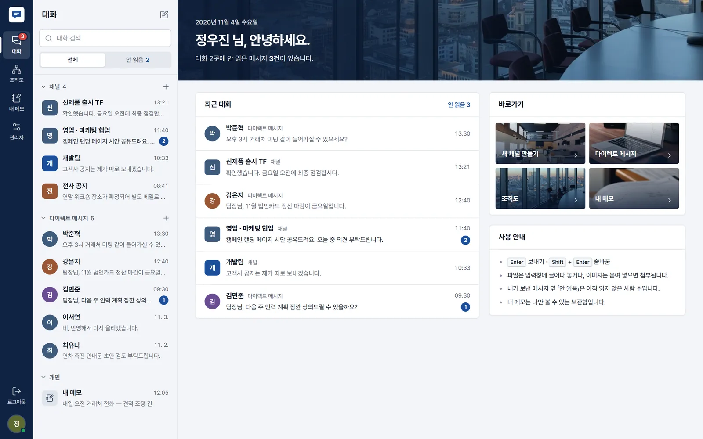
로그인하면 최근 대화와 읽지 않은 메시지부터 보입니다.
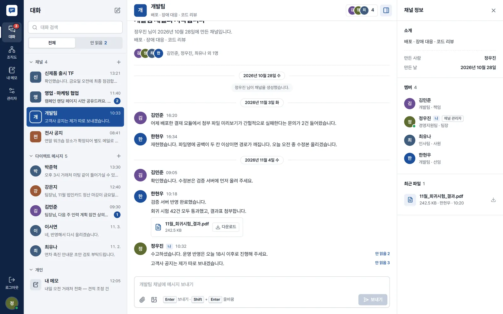
업무용으로 읽기 쉽게 — 이름과 시각, 날짜 구분선이 붙은 목록형 대화입니다.
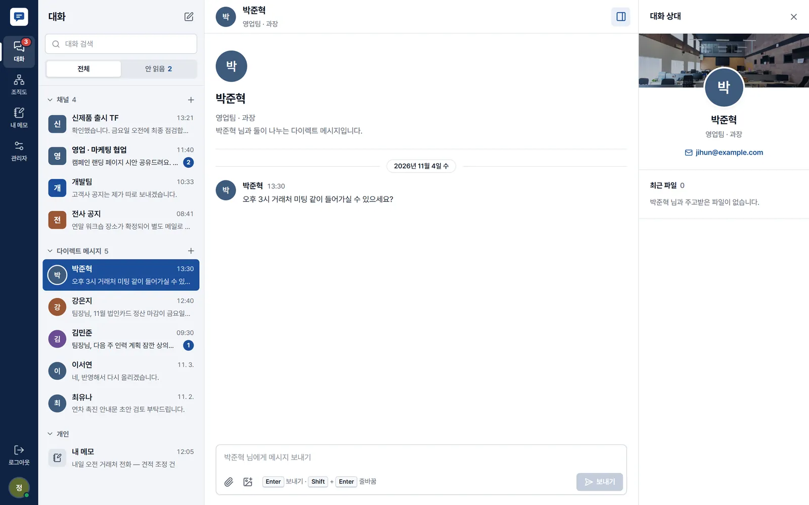
상대의 부서 · 직급 · 메일을 보면서 대화합니다.
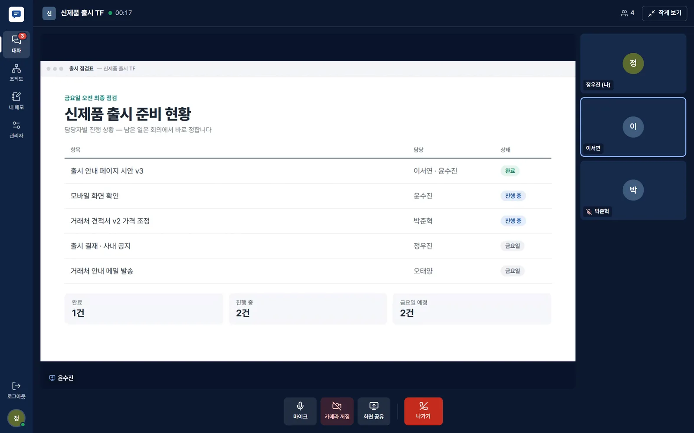
대화하던 채널에서 바로 회의를 열고, 같은 자료를 보며 이야기합니다.
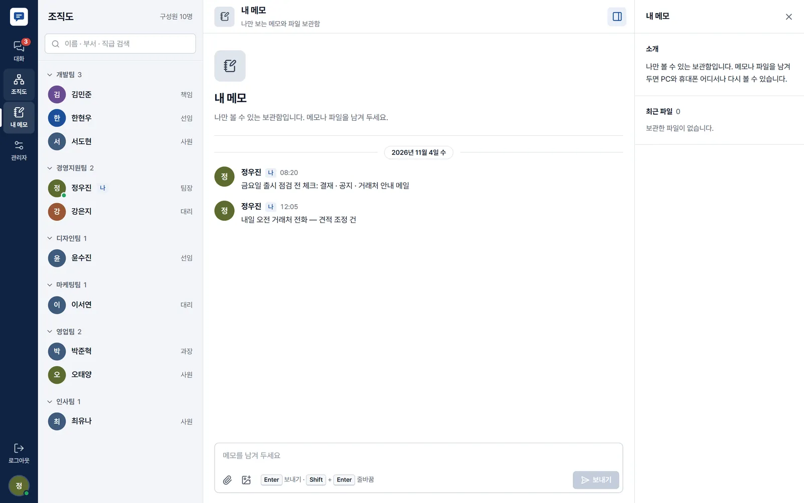
회사 사람을 부서별로 모아 보고, 바로 대화를 엽니다.
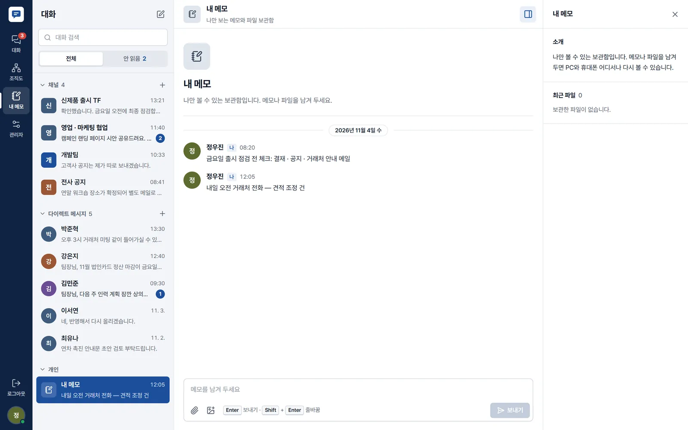
「나에게 보내기」 대신 쓰는 나만의 보관함입니다.
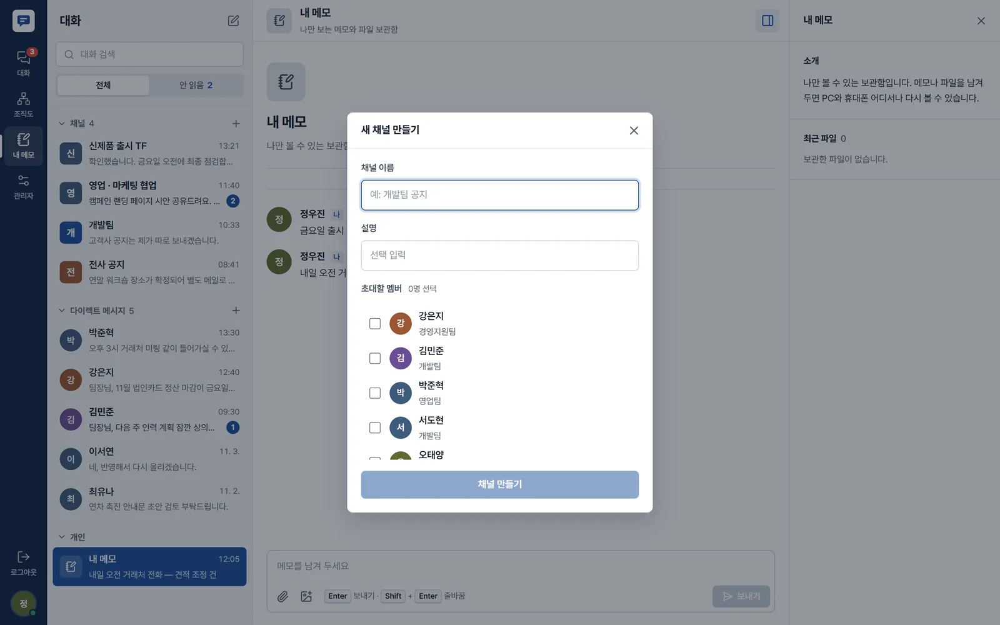
필요할 때 누구나 채널을 열고 사람을 초대합니다.
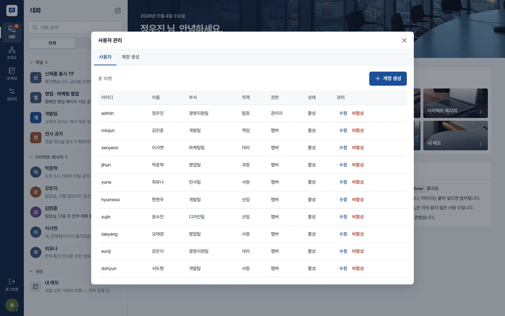
관리자만 보는 메뉴에서 직원 계정을 만들고 닫습니다.
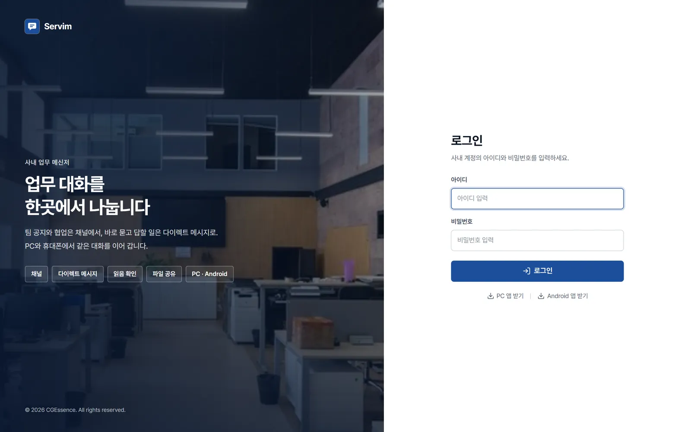
받은 계정으로 로그인하고, 로그인 화면에서 앱도 받습니다.
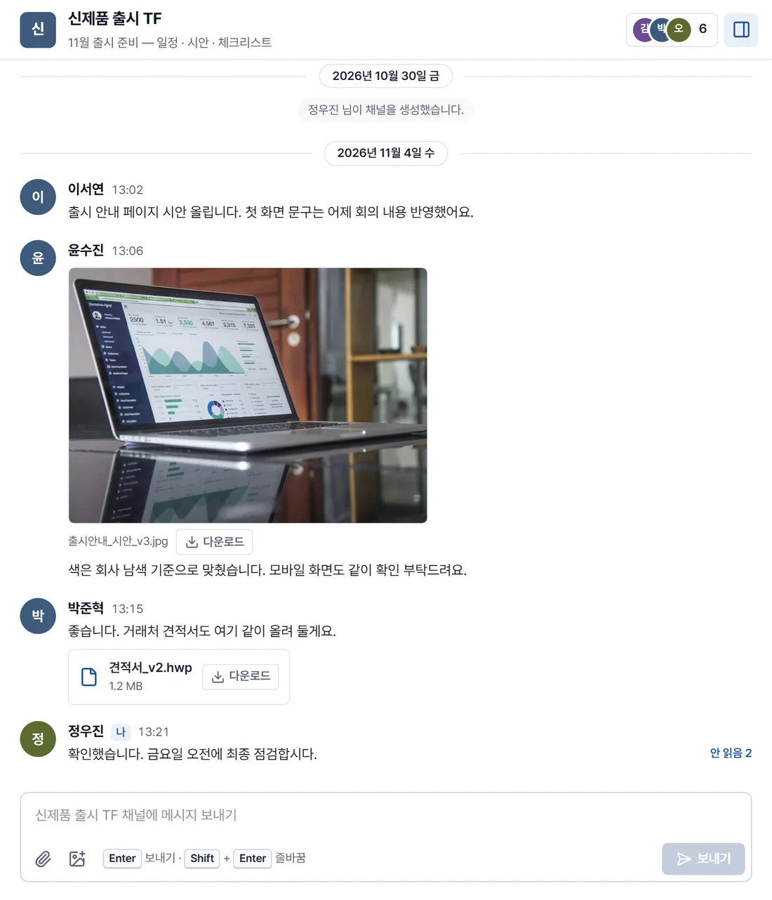
사진은 대화 안에서 미리 보이고, 한글 · 오피스 · PDF 파일은 이름과 크기가 붙은 카드로 올라와 그 자리에서 내려받습니다. 내가 보낸 메시지 옆에는 아직 읽지 않은 사람 수가 남습니다.
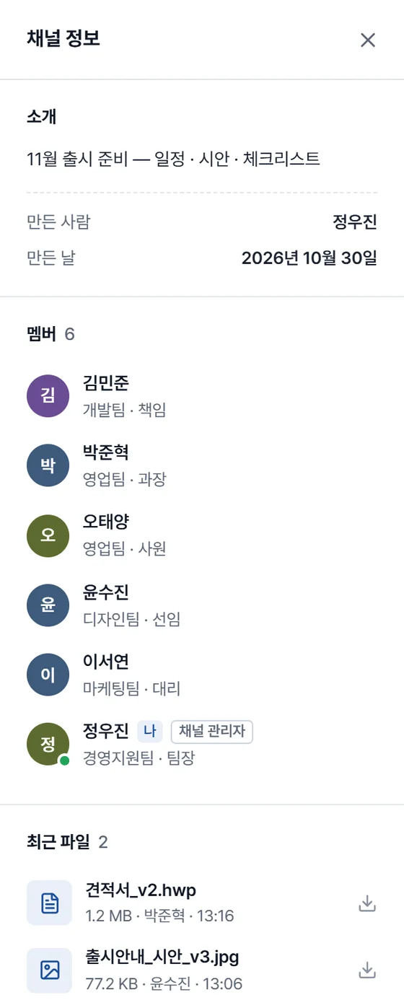
대화 오른쪽 정보판에 채널 소개와 멤버, 최근 올라온 파일이 모입니다. 지난주에 받은 견적서를 찾으려고 대화를 거슬러 올라가지 않아도 됩니다.
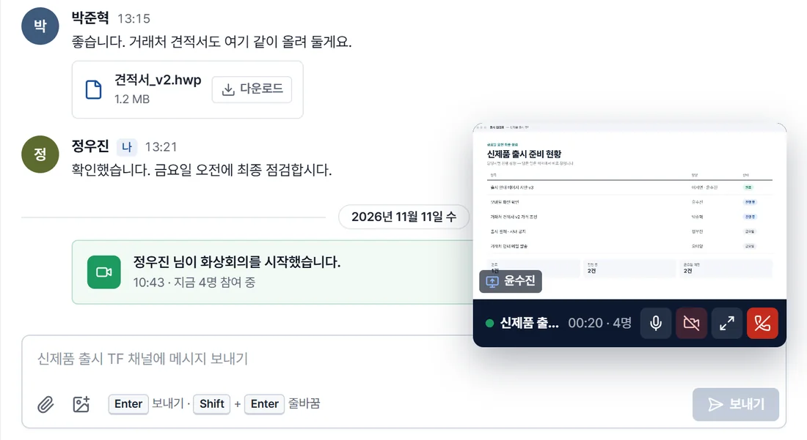
「작게 보기」를 누르면 회의가 화면 구석의 작은 창으로 옮겨 가고, 그 사이 대화와 파일을 계속 봅니다. 회의를 시작하면 대화방에 카드가 남아 늦게 온 사람도 「참여」로 들어오고, 끝나면 걸린 시간이 기록됩니다.
Windows PC 앱 · 웹 브라우저 · Android 앱이 모두 같은 서버에 붙어, 어느 기기로 들어와도 같은 대화가 이어집니다.
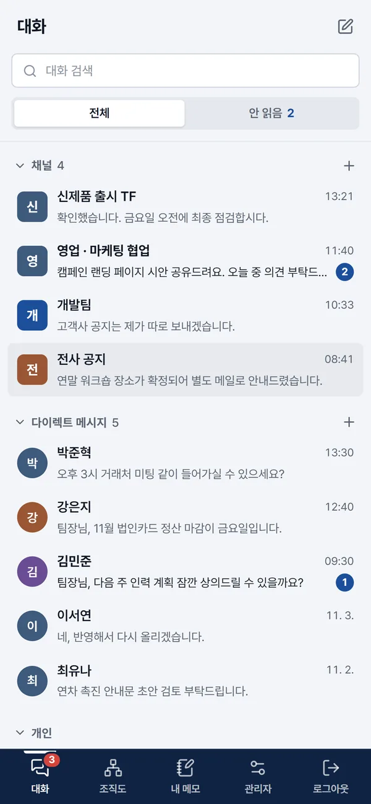
누구나 가입하는 화면이 없습니다. 관리자가 계정을 만들어 주고, 회사를 떠난 사람은 비활성화 한 번으로 더는 들어올 수 없습니다.
첨부 파일은 그 대화방에 속한 사람만 열 수 있습니다. 문서 · 이미지 · 압축 파일만 올릴 수 있고, 실행 파일은 받지 않습니다.
비밀번호는 되돌릴 수 없는 방식(해시)으로 저장합니다. 15분 안에 5번 틀리면 그 계정의 로그인 시도를 잠시 막습니다.
계정을 만들고 채널을 열면 그날부터 씁니다.
임직원 수와 지금 업무 대화에 쓰는 메신저를 들려주시면, 실제 화면으로 맞는지 함께 봅니다.
관리자 화면에서 임직원 계정을 만들고 부서 · 직책을 적습니다.
전체 공지 · 부서 · 프로젝트 채널을 만들고 함께할 사람을 초대합니다.
로그인 화면에서 PC 앱 · Android 앱을 받거나 웹 주소로 들어와 대화를 시작합니다.
아니요. 가입 화면이 없고 관리자가 계정을 만들어 줍니다. 회사 사람만 들어오는 메신저가 되는 이유입니다.
한글(hwp · hwpx) · 워드 · 엑셀 · 파워포인트 · PDF · 텍스트 · CSV · 이미지 · ZIP 파일을 파일당 50MB까지 보냅니다. 실행 파일은 받지 않습니다.
Android는 로그인 화면에서 앱을 받아 씁니다. 그 밖의 휴대폰은 웹 브라우저로 같은 주소에 로그인하면 화면이 휴대폰 폭에 맞춰집니다.
관리자가 계정을 비활성화하면 로그인이 막힙니다. 계정을 지우지 않으므로 그동안 채널에 남긴 대화는 그대로 남습니다.
한 번에 6명까지 참여합니다. 채널이나 1:1 대화에서 [회의]를 누르면 그 대화방 멤버에게 알림이 가고, 그 대화방 멤버만 들어올 수 있습니다.
아니요. 회의 영상과 음성은 녹화하거나 서버에 저장하지 않습니다. 대화방에는 회의를 시작하고 끝낸 기록과 걸린 시간만 남습니다.
임직원 수에 따라 달라집니다. 도입 문의로 알려 주시면 견적과 함께 안내드립니다.
완성된 서빔를 월 구독으로 바로 쓰시거나, 우리 회사에 맞게 기능을 더해 구축합니다.
바로 쓰기
사용 인원에 따른 월 구독
구독 센터에서 바로 신청하면, 영업일 1일 안에 우리 회사 전용 주소 · 관리자 계정과 설치 파일을 메일로 보내 드립니다. 설치하면 바탕화면에 아이콘이 생깁니다. PC · 안드로이드 앱 설치 안내도 함께 드립니다.
우리 회사에 맞게
견적 요청 → 상담 → 견적서 → 구축
서빔를 바탕으로 우리 회사 업무에 맞는 기능을 더하거나, 화면 · 양식을 바꾸거나, 쓰고 있는 다른 시스템과 연결합니다. 견적 요청 메일을 보내 주시면 상담 뒤 견적서를 드리고, CGEssence 가 직접 찾아가 구축합니다.
임직원 수와 지금 업무 대화에 쓰는 메신저를 알려 주시면, 시연 화면과 함께 도입 방법을 하루 안에 답변드립니다.